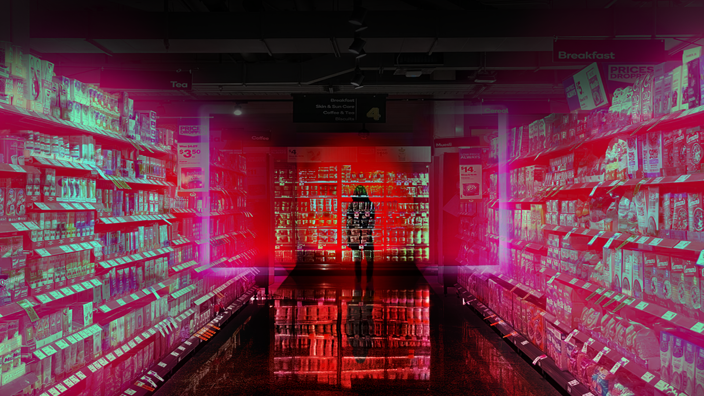

Det jeg hadde trengt å høre var at dette som skjer er ikke min feil. Det er ikke jeg som er et dårlig menneske, stygg eller dum.
Det er fordi en annen har det vondt og velger å la sin smerte gå utover meg.
Det hadde nok hjulpet for veldig mange andre å høre. Det er veldig mange som sitter i en situasjon og tenker at dette er det de fortjener.
Det er ikke det man fortjener. Man fortjener ikke å få høre nedlatende kommentarer, bli skreket til, gjort narr av eller nedverdiget.
Kort fortalt da, så har jeg blitt utsatt for psykiske overgrep av foreldre og av en av mine tidligere kjærester.
Må puste litt av og til.
Det hele har vel påvirket meg mer enn det jeg har trodd, og det har pågått over veldig lang tid.
Men jeg har på en måte ikke skjønt det før nå nylig. Så det er litt vanskelig å snakke om.
Måten jeg skjønte det på?
Thomas var veldig snill og sjarmerende i starten.
Men så hadde han sånne tidspunkt, eller ja – han kom med veldig mange rare kommentarer.
Sånn som at jeg ikke var flink på noe og jeg hadde ingen interesser som interesserte han.
Jeg måtte jobbe for at han skulle ville beholde meg.
Han satt jo å sa veldig mange stygge ting, men man skjønner jo ikke at man fortjener bedre enn det da.
Så begynte jeg å lese på Reddit. Der var det flere som hadde spurt om samme ting som det jeg satt og lurte på: om dette var normalt og hva man skulle gjøre i en slik situasjon. Svaret var jo da at det var psykiske overgrep som jeg ble utsatt for.
Fordi sånn som jeg har skjønt det, så er poenget med psykiske overgrep liksom å bryte ned selvtilliten din sånn at man blir avhengig av dem og at de skal kunne kontrollere deg til å gjøre det de vil.
Etterhvert så jeg at mange skrev om at foreldrene deres hadde gjort det samme – altså begått psykiske overgrep. Så leste jeg videre på postene der, og i kommentarene så fant jeg mange historier om foreldres overgrep som jeg kjente meg veldig igjen i. Dette var i 2019. Da fikk jeg en slags oppvåkning:
«Shit! Foreldrene mine har jo faktisk utsatt meg for det samme».
Jeg og mamma har aldri egentlig hatt et godt forhold.
Jeg har aldri heller skjønt hvorfor.
Da jeg var 9 år, spurte jeg mamma om hvorfor hun ikke elsket meg like mye som hun elsket søsteren min.
Når søsteren min var på besøk, var alltid mamma kjempeglad og hjelpsom.
Men så fort hun dro, var mamma sint på oss og i dårlig humør igjen.
Da fikk jeg til svar: «Hvordan kan du tro noe sånt om moren din? Det må du ikke tro. Jeg elsker alle ungene mine like mye».
For mamma så måtte jeg bli mer som søsteren min: bli brun, gå med sminke og få søsteren min sin stil. Noe som igjen gjorde at det jeg hadde tenkt på siden jeg var liten, altså det med at hun elsket søsteren min mest, bare fikk et større fotfeste hos meg enn før.
Da jeg var 13/14 så kjøpte hun masse sminke til meg, for da var det "virkelig på tide". Så hun kom jo egentlig med nedlatende kommentar maskert som et tips da. Jeg fikk også masse nye klær sånn at jeg kunne bli enda finere, og da var det jo søsteren min som valgte klærne i hennes stil.
Jeg var også "altfor blek", og fikk høre at det var "så mye finere når man var brun".
"Hvis du legger deg i solarium, så blir du så brun og fin."
Så jeg gjorde jo det da når jeg var 13-14 år, og endte opp med å få soleksem. Det er helt jævlig. Brant på kroppen i flere dager og det klødde. Måtte sove på iskalde håndklær for å roe det ned. Men jeg fikk ikke lov til å si noe til pappa da, så jeg tror hun innså at hun hadde fucket opp.
Jeg har jo fra jeg har vært liten, vært veldig høy og tynn. På skolen så ble jeg kalt tjukk, og hjemme ble jeg ofte kalt for 'Belsen-fange' (fanger som blir sultet). Dette gjorde at kroppen min fikk veldig mye fokus som den ikke trengte i det hele tatt.
Da jeg var 14 år, utviklet jeg en spiseforstyrrelse. Denne førte også med seg en depresjon som kom da jeg var 16. Da jeg var 17 så ba mamma meg om å bli gravid, for da kom jeg til å legge på meg, og da hadde jeg blitt «myyye finere».
Jeg fortalte ikke noe av dette til mine foreldre før jeg var 17. Da jeg trengte deres underskrift på et skriv fra psykologen jeg begynte å gå til.
Nå var jeg endelig klar for å få hjelp.
Mamma var veldig imot at jeg gikk til psykolog. Jeg ble fortalt at jeg ikke kunne si noe til han, fordi det jeg sa kom til å forfølge meg resten av livet: i jobbsøking og legetimer osv. Det var fordi hun ikke ønsket at jeg skulle finne ut sannheten om henne, vil jeg tro.
Til tross dette, så ble jeg frisk i slutten av 2018.
Fokuset på penger har alltid vært veldig ekstremt. I 2015 skulle jeg ha venninner på besøk, og da dro vi på handletur for å kjøpe inn middager osv. Når mamma skal på shopping derimot så holder det ikke med noen få ting, hun fyller opp hele bilen. Så på vei til kassen da, kjørte vi med en full handlevogn så sier hun til meg. Bare sånn at du vet det, så er det besøket ditt grunnen til at vi må spise suppe resten av måneden.
Siden jeg begynte å jobbe i 2017, har hun kommet ned på rommet mitt og spurt meg «hvor mye penger synes du moren din er verdt i dag?», og da har jeg måtte vippse henne penger så hun kunne dra på shopping. Det er jo ikke snakk om hver dag, men det skjedde hvert fall en gang i måneden.
Senere i 2019, hadde jeg en samtale med pappa på vei hjem fra jobb en kveld.
Da sa jeg til pappa at min daværende kjæreste utsetter meg for psykiske overgrep, og at mamma gjør det samme.
Pappa sa da at han ville at jeg skulle komme meg vekk fra den kjæresten jeg hadde.
Han ikke ville at jeg skulle ende opp i samme situasjon som den han var i med mamma.
Pappa bekreftet det på dette tidspunktet at mamma drev med psykiske overgrep, og at han visste om dette.
En dag i november i 2020, var det plutselig en helt annen sak. Da fornektet han alt, og sa at de to ikke drev med noen form for psykiske overgrep.
Dette var dagen jeg flyttet ut.
Dagen før hadde jeg, storesøsteren min og lillebroren min dratt opp til storebroren min for å møtes og snakke litt om alt det som mamma og pappa hadde utsatt oss for.
Mamma hadde på dette tidspunktet ikke noe kontakt med storesøsteren min, etter at de ble uvenner i 2019. Hun ikke gjorde det mamma ønsket.
Jeg og lillebroren min fortalte ikke at vi skulle opp dit, for mamma ble sur dersom vi snakket med søsteren vår. Vi fikk vite veldig mye nytt, også var det en del ting vi ikke kunne få vite før vi hadde flyttet ut selv.
Så etter at vi hadde vært der oppe og hadde fått utløp og snakket ut, så dro vi hjem. Da vi kom hjem da, sto mamma utenfor og snakket i telefonen, også sier hun til den hun snakket med at «Nå kommer Emilie og Sander hjem. De har vært hos Thomas med Marthe».
Vi ble jo litt redde siden hun hadde funnet ut av hvor vi var. Så før vi rakk å komme oss inn, kommer hun etter og skriker til oss at vi var så uhøflige som ikke sa hei til henne.
Hun var jo ikke sur fordi vi ikke sa "hei". Hun var jo sur fordi vi hadde vært og snakket med søsknene våre.
Pappa kalte sammenkomsten vår for et «terrormøte». Etter at mamma hadde skreket ferdig, gikk jeg og broren min inn på hver vårt rom. Ikke lenge etterpå, kom mamma inn på rommet til broren min, hvor jeg sto klar. Jeg visste hun kom til å komme for å kjefte på ham som vanlig, siden han ikke klarte å stå opp for seg selv på samme måte som meg.
Hun sa vi var så frekke, og at hun skulle ringe etter hjelp til meg og Sander dagen etter, fordi det trengte vi virkelig. Hun sa at når dere flytter for dere selv, da kan dere bestemme over dere selv. Men så lenge dere bor under mitt tak, får dere aldri lov til å bestemme selv. Det er jeg som er moren. Jeg får lov til å være respektløs mot dere.
Dagen etter sto jeg da opp 6 på morgenen, kjørte ut på jobben hvor jeg fikk søppelsekker og kjørte hjem og pakket ned hele rommet mitt i dem og andre bager jeg hadde. Jeg kom meg ut av huset før klokken var 14.
Mamma og de har jo vist meg en type kjærlighet. Den kjærligheten har jo blitt programmert inn i mitt system, og den typen kjærlighet er jo det hodet mitt er på jakt etter. For meg er dette sånn man skal bli behandlet. Men den kjærligheten jeg har blitt vist er jo ikke noe bra. Dette fører vel til at jeg ofte har havnet i dysfunksjonelle relasjoner der jeg har blitt behandlet veldig dårlig.
I vennskap har jeg hatt lett for å bli utnyttet. Jeg har gitt mitt alt for å holde fast ved dem, men så har de kanskje brukt det som en mulighet til å få det de vil ut av meg. Så veldig ofte ender jeg opp med å overprestere.
Dette gjaldt på skolen også fra jeg var liten. Jeg gjør alltid alt jeg kan for å vise at dette er jeg god på. Da jeg var 14 år, sa pappa da vi satt i stua, «nå stresspuster du, du vet det sant». Gjør vel mitt alt på skolen så jeg har noe å vise til mamma og pappa, så jeg kan si
«Hei, kan dere se meg også?».
Overpresteringen har liksom vært min måte å prøve å bli sett på da på alle arenaer: hjemme, blant venner og på skolen.
I 2019 da jeg skulle begynne på høyere utdanning, sa mamma til meg:
«Er du sikker på at du er sterk nok til å begynne på skolen? Jeg tror ikke du er sterk nok».
Dette førte jo til at jeg fikk mine tvil, og endte opp med å slutte på studiet. Men så begynte jeg jo igjen på studier igjen nå, og tenker
«Fuck deg mamma».
Jeg har prøvd å vri litt på det, og prøvd å bevise at dette klarer jeg uansett hvor mye hun prøver å bryte meg ned. Uansett hvor mye hun prøver å kontrollere meg.
Jeg er sterk nok.
Nå har jeg fått meg ny kjæreste. Jeg slo opp med han andre i mai 2020. Han har jo kommet med drapstrusler mot oss i ettertid. Han har jo det helt klart ikke bra med seg selv.
Han ble jo utsatt for fysisk vold av sine foreldre, noe som får meg til å lure om det var derfor han var som han var. Mamma ble også utsatt for både fysisk og psykisk vold av sine foreldre. Allikevel så er det ikke en unnskyldning for å behandle folk slik dem gjør.
Jeg og typen skulle ut og spise pizza en gang jeg ikke hadde pyntet meg så mye. Da sa mamma at hvis du går ut av døren uten nå, kommer han til å forlate deg. At jeg liksom ikke var god nok som jeg var, og at han kom til å synes jeg var stygg.
Jeg måtte heller ikke si noe negativt eller snakke så mye om meg selv. Da kom han hvert fall til å forlate meg. Dette har hun alltid sagt om venner også, noe som har gjort at jeg har blitt veldig redd for at folk skal forlate meg. Jeg skyver ofte folk bort før de får sjansen til det.
Det jeg synes er kjipt da er at historien min ikke er den eneste, det finnes mange som den, mange som er verre og andre som ikke er like ille.
Men alle og enhver er like viktige.
Historiene blir ikke hørt eller snakket så mye om.
Hadde vi hatt mer fokus på det, innsett at det blir begått psykiske overgrep overalt rundt oss så hadde vi kanskje fått gjort litt mer med det.
Vi kunne hjulpet ofrene med å innse at man ikke trenger å sitte fast i en slik situasjon.
Gitt flere hjelpen de trenger.
Om det så bare er en sjanse til å snakke ut om det som skjer med den.
Vi kunne reddet mange barn fra en fremtid hvor de må leve med PTSD, traumer og at vi slipper at flere mennesker ender opp med psykiske lidelser som kunne vært unngått.
Psykiske overgrep påvirker oss på så mange måter som vi kanskje ikke skjønner.
Det jeg hadde trengt å høre, var at dette som skjer er ikke min feil. Det er ikke jeg som er stygg, dum, eller et dårlig menneske. Det er fordi en annen har det vondt og velger å la sin smerte gå utover meg. Det hadde nok hjulpet veldig mange andre å høre også, for mange sitter i en slik situasjon og tenker at de fortjener det.
Det er ikke det man fortjener! man fortjener ikke å få høre nedlatende kommentarer, eller å bli skreket til, eller å bli gjort narr av eller nedverdiget.
Etter å ha vært utsatt for alt det her, er det viktig å jobbe med seg selv. For meg har det hjulpet å lese andres i historier og innse at jeg ikke er alene i det her. Det å vite at andre har fått det bedre, og hva som har funket for dem har også vært til stor hjelp for meg.
Jeg har jo mye å jobbe med jeg også, men jeg ser helt klart lyset i enden av tunellen. Jeg tror på at alt skjer av en grunn, og at det er en grunn til at jeg har blitt den personen jeg er i dag. Jeg vil jo gjøre alt jeg kan for å hjelpe, og stå opp for andre: noe jeg skulle ønske noen kunne gjort for meg.
Det er veldig mange som sliter og det er mange som trenger hjelp. Jeg ser jo at det har gått veldig bra for meg, jeg har vært veldig langt nede, men jeg klarer meg veldig bra nå. Det er lys i tunellen. Det er det for alle. Det er mørkt til tider, men det blir alltid bra til slutt.